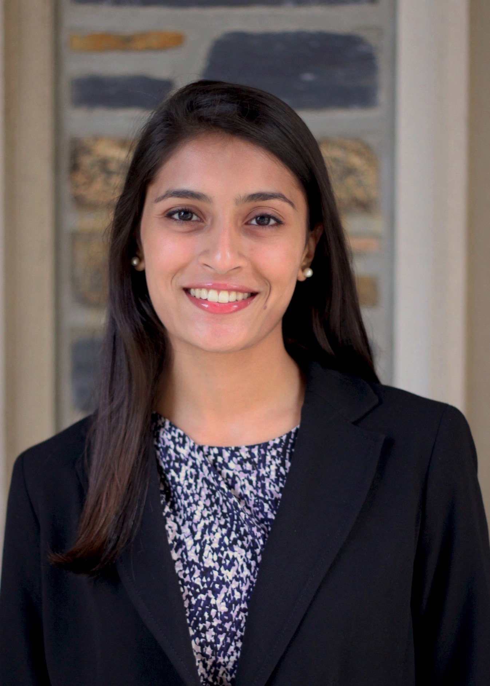
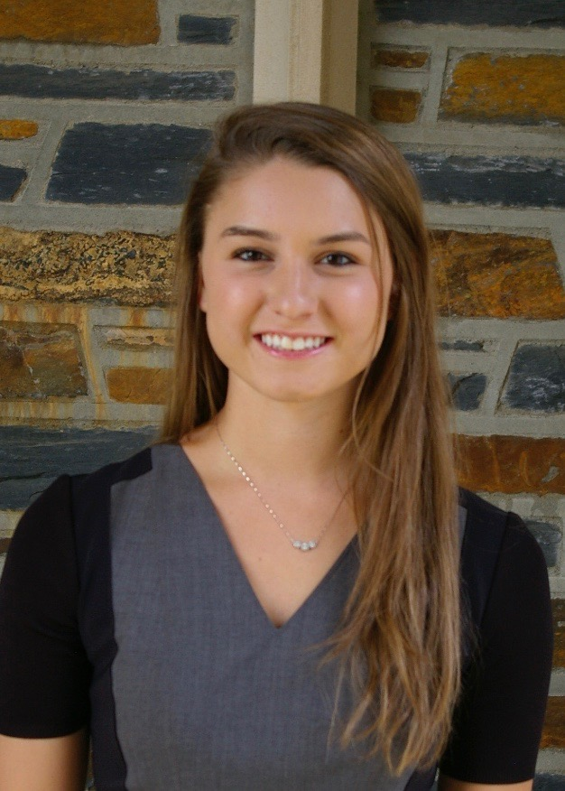
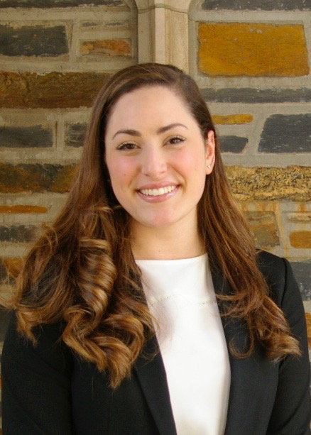

BOW Bios

Apara Sivaraman: President
Apara Sivaraman is a senior from Troy, Michigan majoring in Political Science with a minor in Finance and a certificate in Philosophy, Politics and Economics (PPE). Apara has previously served on BOW's executive board as the VP of Events for finance and consulting and as the Technology Chair. This past summer, Apara interned at J.P. Morgan in their Investment Banking Division. She has also interned at Accenture as a Strategy Consulting Analyst and at Cisco as a Sales Strategy & Planning Intern. Apara also serves on the executive board of Dukes and Duchesses, an organization of student ambassadors who represent the office of the University President and Duke University at large. In her free time, Apara enjoys jogging, biking, traveling, and cooking.

Krista Niemeier: Executive Vice President
Bio

Alexandra Martin: VP Communications
Alexandra Martin is our Vice President of Communications. She joined BOW the fall of her sophomore year and served on exec as the Communications Chair the following year. She is a rising senior, majoring in Public Policy with a minor in Economics. BOW allowed Alexandra to realize and cultivate her interest in the financial markets, and she spent this past summer interning in the Global Capital Markets division of Morgan Stanley in New York City. The summer before her junior year she worked at an institutional research boutique in DC called Washington Analysis. The firm anticipates and analyzes changes in public policy that will impact the financial markets. As an analyst intern she conducted extensive research, attended hearings, and coauthored notes for distribution to investor clients. Alexandra’s involvement on campus has reached beyond BOW as a member of Kappa Alpha Theta, crew leader for the freshman pre-orientation program PBUILD, and publicist for the online publication The Standard. She has really enjoyed her time on exec and is excited to return in her new position.
Carly Bandt: Communications Chair
Carly Bandt is a junior from Minnesota majoring in Public Policy with a minor in Economics and a certificate in Markets and Management Studies. In addition to BOW, she is the Honor Council VP of Internal Affairs and a research assistant at the Center for Advanced Hindsight and the Center for Behavioral Economics and Health Research. This summer, she interned at Wells Fargo Securities in the Public Finance and Technology, Media, and Telecom Investment Banking groups. Last summer, she studied political economy at Oxford University. She will be managing her duties as Communications Chair while studying abroad in Copenhagen before returning to Duke in the spring. In her spare time, she enjoys running and backpacking in new locations.

Eileen Cheng: VP Mentorship
Eileen is a junior from Atlanta, Georgia majoring in Economics and Public Policy with a History minor. In addition to her involvement in BOW, Eileen served as a consultant for 451 Technologies as a part of Duke Consulting Club. In the previous summers, Eileen interned as a community consultant in Guatemala for the Social Entrepreneur Corps and as a derivatives trading analyst at Valkyrie Trading. This past summer, she interned at J.P. Morgan’s Sales and Trading division in their rates trading group. In her free time, Eileen enjoys working as a barista, cooking & baking, and spending time with her friends and family.

Gina Rhee: VP Professional Development
Gina Rhee is a junior from San Jose, California majoring in economics with a finance concentration and biology. In addition to being VP Professional Development, she has served within BOW as a member of the Lean-In Committee. Outside of BOW, Gina is chair of the Undergraduate Publications Board, a mentor of local girls interested in science and math through FEMMES, and an undergraduate representative of the Duke Student Alumni Board. Previously, she interned in the business development division of a biotechnology startup in the Bay Area and this past summer, she participated in the DukeEngage Durham program as a fellow in the City of Durham Office of Economic and Workforce Development. Last semester, Gina also studied away through the Duke in New York Financial Markets & Institutions Program. In her spare time, she enjoys being active outdoors, exploring restaurants in Durham, and going to live music events.
Grace Li: VP Alumni Relations
Grace Li is a senior from Montville, NJ majoring in Economics with minors in history and environmental science and policy. In addition to being the VP of Alumni Relations, she is involved with Duke Community Consulting and tour guiding, and enjoys skiing, modern art, and trying new restaurants. This past summer she interned at Citigroup in Sales and Trading. Previous summers she interned at an immigration law firm and studied abroad in Oxford.

Grace Peterson: Membership Chair
Grace Peterson is a sophomore who came to Durham from the San Francisco Bay Area. Last year, she enjoyed jumping into the Duke community by joining the Duke Children's Hospital Committee and BOW's Scholarship Committee. Following her freshman year, Grace pursued a marketing internship in San Francisco for a financial services company. She looks forward to applying the business development, research, and analytical skills she learned over the summer to help strengthen BOW as she serves as the Membership Chair.
Jenny Zhang: VP Membership
Jenny Zhang is a sophomore from Chicago, Illinois pursuing a double major in Economics and Psychology on the pre-law track. In addition to being Vice President of Membership for BOW, Jenny has been a volunteer tutor at Durham Public Schools through Duke’s Partners for Success. This past summer, she interned at CARPLS, a legal aid agency in Chicago, where she conducted data analysis and performed client intake services. In her free time, Jenny enjoys spending time with family, reading, and baking.

Marielle Rodgers: Alumni Relations Chair
Marielle Rodgers is a junior from Columbus, Ohio majoring in Economics with a certificate in Decision Sciences. She served as the VP of Operations for the Duke Marketing Club, Employer Relations Chair as a member of the Career Ambassador Team and was the Spring Business Conference chair for BOW. An active member of Zeta Tau Alpha Fraternity, Marielle served as the Director of Philanthropy. This past summer she interned in marketing for Microsoft's Cloud and Enterprise division and last summer participated in DukeEngage as a grassroots consultant in Nicaragua for the Social Entrepreneur Corps. This fall she will pursuing her love of travel and studying at University College London before returning to Duke in the spring.

Mary Ziemba: Technology Chair
Mary Ziemba is a rising junior from New Jersey. She is studying Computer Science and is working toward a certificate in Innovation and Entrepreneurship. Mary joined BOW her freshman year pursuant to her interest in the technology industry. She is sponsored by Duke's Computer Science Department to attend the Grace Hopper Celebration of Women in Computing in October 2016. She will also travel to MIT for the HackMIT hackathon and participate in HackDuke in the fall. She serves as an undergraduate TA in the Computer Science department. She is excited to lead BOW's women in tech as technology chair. In past summers, she has participated in Duke in the Silicon Valley Program and was a data advisor and analyst at the US Agency for International Development in Washington, DC.

Michelle Chen: VP Finance
Michelle Chen is a junior from Overland Park, KS majoring in Computer Science with minors in Economics and History. In addition to being the VP Finance for BOW, Michelle serves as the current Director of HackDuke, the largest collegiate hackathon in the world addressing social good, is a part of Duke Business Society, and sits on the Exec Board Duke Youth for Debate as the Director of Community Outreach, teaching public speaking at local Durham schools. She is also a computer science UTA and an active member of the Delta Gamma Fraternity. This past summer Michelle interned at Morgan Stanley in the Technology & Data Division as a Business Analyst; in previous summers Michelle interned at Morgan Stanley in the Wealth Management Division. In her free time she enjoys traveling, TED Talks, and spending time with friends.

Natalie Shammas: VP Events: Diversified Industries
Natalie Shammas is a junior from Greenville, NC. She is pursuing a major in Psychology, a minor in Sociology, and a Markets and Management Studies Certificate. Natalie has previously served on BOW’s executive board as Logistics Chair. During her time with BOW, she has strived to increase the diversity of industries represented on BOW’s event calendar. In addition to BOW, Natalie is a student manager for Duke Women’s Basketball team and an undergraduate scholar at the Fuqua/Coach K Center on Leadership and Ethics. She is interested in pursuing a career in sports, and this past summer, she interned in the marketing and corporate partnership departments for the WNBA’s Atlanta Dream. In her free time, Natalie enjoys spending time with family, watching basketball, baking, being active, and traveling.

Sarah Cogan: Mentorship Chair
Sarah Cogan is a sophomore from New York pursuing a double major in Computer Science and Philosophy. In addition to being the Mentorship Chair for BOW, Sarah is a member of Duke: Effective Altruism and is the Treasurer of Lady Blue, a Duke a capella group for which she also serves as an arranger. This past summer she was a Teaching Assistant at Girls Who Code, where she taught introductory computer programming to high school girls. In her free time she enjoys reading plant-based cooking blogs, listening to podcasts, and staying active with yoga and pilates.
Sharon Peng: Logistics Chair
Sharon Peng is a junior from Miami, Florida majoring in Statistical Science with a minor in Computer Science. She is passionate about education and has an interest in its intersection with business and finance. Some of her previous on-campus experiences include working as a lab research assistant for the Duke Center for Cognitive Neuroscience and as a student project manager for a Bass Connections education startup app. This past summer, she spent 10 weeks teaching with DukeEngage in Beijing, China. In addition to dancing with the Duke Chinese Dance Troupe, Sharon also enjoys reading novels and taking photographs. She is looking forward to serving as the 2016-2017 BOW Logistics Chair.
Shruti Rao: Spring Business Conference Chair
Shruti Rao is an Alice M. Baldwin Scholar pursuing a Program II major titled, "Global Value Chains, Design and Technology" and a Certificate in Decision Sciences. She has been a member of BOW since her freshman year at Duke and has previously served as the VP of events on BOW's Executive Board. Shruti is passionate about BOW's mission to empower and connect Duke women who are passionate about business and is grateful to BOW for the guidance and support she has received over the years. She has spent two years as a columnist for the Duke Chronicle and a year as a member of a Bass Connections research team. Her research focused on using Global Value Chains to create economic development strategy for North Carolina's Appalachian region. She is spending her summer interning at the U.S. Office of Innovation and Entrepreneurship at the Department of Commerce in Washington DC working on innovation strategy for American economic competitiveness. In her free time Shruti enjoys cycling, boxing, reading and spending time with her family.

Sophia Mamilli: VP Events: Finance and Consulting
Sophia Mamilli is a senior from Paris, France pursuing a major in Public Policy Studies and minors in Economics and Arabic. For the past three years, she has been on the exec board of BOW and has served as the VP of Events for Finance and Consulting, the Alumni Relations Chair and the Logistics Chairs. In addition to her leadership roles in BOW, Sophia is part of Duke Business Society, a Research Assistant and an active member of Pi Beta Phi Fraternity. In previous summers, Sophia interned at Morgan Stanley in the Global Capital Markets and Institutional Equities Divisions, took classes at the London School of Economics and interned at Lodestone Logic, a consultancy pharmaceutical startup. In her spare time, Sophia enjoys traveling, working out and spending time with family and friends.
Whitney Hazard: VP Entrepreneurship
Whitney Hazard is a junior at Duke studying Public Policy with certificates in Markets and Management and Innovation and Entrepreneurship. The daughter of a tech venture capitalist, she has always been interested in entrepreneurship and technology start-ups. Her first journey into the world of entrepreneurship was when she became the first employee at Hello Alfred, a company in the shared services industry providing household services for the urban professional. She spent the last summer working in marketing operations at a business analytics software-as-a-service company, InsightSquared. Additionally, she served as the Chief Marketing Officer at partiO, an app that allows college students to rent their belongings to other community members. At Duke, Whitney is involved with many things including Business Oriented Women, Gamma Phi Beta Sorority, the Duke Political Review, the First-year Advisory Program, and the Center for Peer Advocacy for Sexual Health. Whitney’s long-term goal is to find new and innovative ways to solve social problems facing the world so that she can leave knowing she positively impacted as many lives as possible.